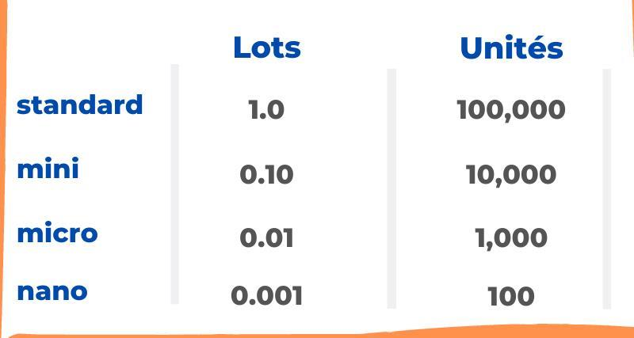

Gestion du risque
Le trading est réputé comme risqué, hasardeux, dangereux, en effet, c'est vrais en parti, que si vous n'intégrez pas la gestion du risque. La gestion du risque est un facteur très important tout bien comme les autres vus précédement.
Son but ?
La protection de capital.
Le trader à plusieurs outils à sa disposition pour protéger son capital et en voicis un:

voici un graphique, nous avons ici un outil de "position longue"(permet d'effectuer une position pour but de faire du profit sur une hausse de prix, car si vous ne le savez pas, en trading, on peut également spéculer à la baisse)
vous voyez bien ou est le prix actuellement, l'outil que vous voyez avec la zone verte et rouge, il y a au millieu une petite ligne grise, entre les deux zones, c'est endroit précis indique l'endroit de notre prise de position.
Ici nous allons parler seulement de la zone rouge, la fin de la zone rouge marque notre stop loss(SL), le SL est votre meilleur ami
Il stop vos pertes à votre place ! vous pouvez prendre une position puis laisser faire, l'esprit libre car vous savez que le SL est la pour vous. (il ferme la position pour vous sortir de la perte)
Mais ce n'est pas tout, et si je vous dis que c'est possible de perdre précisement la somme que vous voulez ? Et bien c'est le cas, vous pensez toujours que le trading est risqué?.. Laissé moi vous montrer

Voici un calculateur de lot, quand vous entrez en position sur un actif, on ne parle pas en monétaire, mais en Lot, et bien, je ne vais pas mentionner ici comment utiliser cet outil mais je vais vous dire en quoi il consiste.
Il permet de calculer "la valeur de votre SL", c'est à dire que donc vous définissez votre SL à un niveau, et avec ça, vous pouvez mettre le lot qui correspond pour que vous perdez uniquement la somme que vous êtes prêt à perdre !

Certain broker(courtier) n'utilise pas les Lots, mais les Unités, voici donc un tableau de conversion !